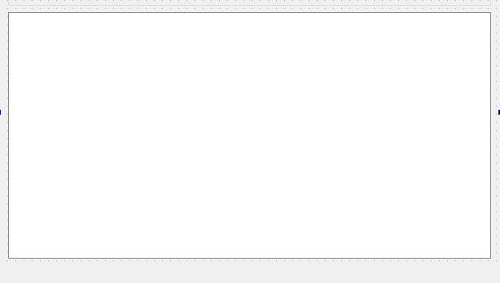
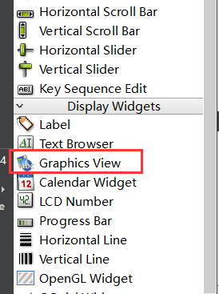
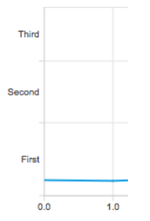
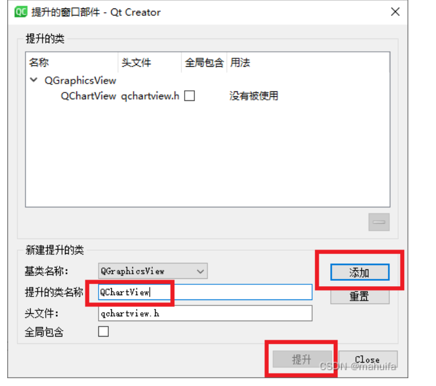

13 绘图
Qt的绘图系统
Qt中的绘图和之前使用OpenCV时在图中进行绘图的方式差别还是很大的，在用OpenCV时，一般都是主动调用绘图函数就行了，但是在Qt中，如果要在控件上绘制东西，一般都得是在其绘图事件中进行绘制，并不能主动调用绘图函数。
Qt中针对不同的控件，绘图的方式区别很大
这些控件主要分为2类
- 继承自
QWidget的控件：重写paintEvent，在此函数里面用QPainter进行绘图Graphics View相关的控件：此类控件不会触发paintEvent，需要调用函数往场景中插入元素来显示
Qt的绘图系统主要包括2部分
QPainter绘图系统：绘制基本的点、线等形状组成自己需要的图形，得到的图形是不可交互操作的Graphics View绘图系统：绘制复杂的组件化图形，每个图件是可选择、可交互的
1.QPainter绘图系统
QPainter绘图系统主要包括以下几部分：
QPainter类：用于进行绘图操作QPaintDevice类：绘图设备的基类，每个可以用QPainter绘制的类，比如QWidget,QPixmap,QImage等都继承了该类
1.1QPainter绘图的主要属性
控制QPainter绘图的属性主要包括：
- pen：这是一个
QPen对象，用于控制线条的颜色、宽度等 - brush：这是一个
QBrush对象，用于控制一个区域的填充特性，包括颜色，渐变特性等 - font：这是一个
QFront对象，用于绘制文字时，设置字体的样式、大小
1.2QPainter绘制基本图形
QPainter定义了许多绘制基本图形的API，都以draw开头，比如drawLines……
1.3绘图的方法
要在绘图设备上进行绘图，必须重写其paintEvent()事件，在其中用QPainter类的实例调用绘图的方法即可
1 | void QWidget::paintEvent(QPaintEvent *e) |
1.4坐标系统和坐标变换
QPainter在窗口上绘图的默认坐标系统为左上角为原点，为了绘图方便，QPainter提供了一些坐标变化的功能，通过平移、旋转等坐标变换让原点、X、Y轴移动，得到一个逻辑坐标系，使得绘图更方便。
2.Graphics View绘图系统
Graphics View绘图架构主要由以下3部分组成：
QGraphicsScene类：绘图场景，场景是不可见的，它是一个抽象的管理图像的容器，可以往其中添加图形项QGraphicsView类：视图组件，用于显示场景中的内容，可以为一个场景设置不同的视图，视图不同，显示的内容可能也不同。当视图大于场景时，能正常显示场景中的内容，当视图小于场景时，视图只能显示场景的一部分，但会自动生成滚动条QGraphicsItem类：图形项的基类，是画在场景中的东西。支持鼠标、键盘输入的事件。
QGraphicsView一般不用手动创建，而是用UI设计里面直接拖的，它的尺寸会随界面而改变

QGraphicsScene一般需要写代码手动创建，并指定一个固定大小。
2.1绘图基本逻辑
1.创建视图和场景对象，视图要主动关联场景
2.创建图形项，调用场景的.addItem()方法将图形项添加到容器中，这样就能在视图中看到图形项了
3.Qt Charts
Qt Charts是Qt中的一个模块，基于
Graphics View系统。可以用于绘制==2D==的图表，包括：折线图、柱状图、饼图等
QChart的数据分装层次大概为 ==QChartView -> QChart -> Series -> Value==，就是说view装chart，chart装series， series装对应类型的值，一些图表值中可能还会细分，只要记住这个顺序，一般都不会漏掉
3.1引入图表模块
在程序中引入Charts模块，需要以下步骤：
- 1.在
.pro文件中加入：QT +=charts - 2.在代码中加入：
using namespace QtCharts;
3.2相关类的介绍
1、QChartView
视图组件(画布)，其父类是QGraphicsView，无法单独进行显示，需要依附其他组件进行显示。比如QChartView通过setChart将QChart添加为显示的图表。
2、QChart
图表类，其最原始的父类是QGraphicsItem类。可以包含一个或多个QAbstractSeries（序列）对象。它提供了管理和控制图表的方法，如添加/移除序列、设置图表标题、轴标签等。
3、QAbstractSeries
是所有Series类的基类，代表图表中的一串数据。派生类包括QLineSeries（线性序列）、QScatterSeries（散点序列）、QBarSeries（柱状序列）等。每个Series可以包含一个或多个数据点，并且可以设置序列的样式、颜色、图例(legend)等属性。
4、QLineSeries
行序列，数据的表现形式，也就是我们要显示的数据，例如折线图。一般是通过QChart的addSeries将QLineSeries添加到图表中，当然不止QLineSeries，还有其他很多类型。
5、QScatterSeries
代表图表中的散点序列，用于绘制散点图。可以通过添加数据点来构建散点序列，也可以设置散点的样式和颜色。
6、QBarSeries
代表图表中的柱状序列，用于绘制柱状图。可以通过添加数据点来构建柱状序列，也可以设置柱子的样式和颜色。
7、QAbstractAxis
是所有轴类的基类，代表图表中的一个轴。派生类包括QValueAxis（数值轴）和QCategoryAxis（分类轴）。每个轴可以设置轴范围、刻度间隔、标签等属性。
8、QValueAxis
数值坐标轴。具体使用步骤为：
①使用QChart的addAxis将坐标轴添加到图表上；
②使用QLineSeries的attachAxis设置数据与坐标轴的依赖关系；
注意这两步设置有先后关系，必须先将坐标轴添加到QChart，如果顺序反了会提示没有与之关联的坐标轴。
9、QCategoryAxis
分类坐标轴，用于显示离散的类别。可以设置轴的类别列表、标签格式等属性。
3.3在Qt Designer中添加图表画布
1.创建一个Graphics View
2.将其提升为图表画布
3.4QChart常用函数
| 类别 | 方法 | 描述 |
|---|---|---|
| 图表外观 | void setTitle() |
设置图表标题，显示在图表上方，支持HTML格式 |
void setTitleFont() |
设置图表标题字体 | |
void setTitleBrush() |
设置图表标题画刷 | |
void setTheme() |
设置主题，主题是内置的UI设置，定义了图表的配色 | |
void setMargins() |
设置绘图区与图表边界的4个边距 | |
QLegend* legend() |
返回图表的图例，是一个QLegend类的对象 | |
void setAnimationOptions() |
设置序列或坐标轴的动画效果 | |
| 数据序列 | void addSeries() |
添加序列 |
QList<QAbstractSeries*>series() |
返回图表拥有的序列的列表 | |
void removeSeries() |
移除一个序列，但并不删除序列对象 | |
void removeAllSeries() |
移除并删除图表的所有序列 | |
| 坐标轴 | void addAxis() |
为图表的某个反向添加坐标轴 |
QList<QAbstractAxis *>axes() |
返回某个方向的坐标轴列表 | |
void setAxisX() |
设置某个序列的水平方向的坐标轴 | |
void setAxisY() |
设置某个序列的垂直方向的坐标轴 | |
void removeAxis() |
移除一个坐标轴 | |
void createDefaultAxes() |
根据已添加的序列的类型，创建缺省的坐标轴，前面已有的坐标轴会被删除 |
3.5数值轴常用函数
数值轴就是QValueAxis类
| 类别 | 方法 | 描述 |
|---|---|---|
| 坐标轴整体 | void setVisible() |
设置坐标轴可见性 |
Qt::Orientation orientation() |
返回坐标轴方向 | |
void setMin() |
设置坐标轴最小值 | |
void setMax() |
设置坐标轴最大值 | |
void setRange() |
设置坐标轴范围 | |
| 轴标题 | void setTitleVisible() |
设置轴标题可见性 |
void setTitleText() |
设置轴标题文字 | |
void setTitleFont() |
设置轴标题字体 | |
void setTitleBrush() |
设置轴标题画刷 | |
| 轴标签 | void setLabelFormat() |
设置标签格式 |
void setLabelsAngle() |
设置标签角度 | |
void setLabelsBrush() |
设置标签画刷 | |
void setLabelsColor() |
设置标签文字颜色 | |
void setLabelsFont() |
设置标签文字字体 | |
void setLabelsVisible() |
设置轴标签文字可见性 | |
| 轴线和刻度线 | void setTickCount() |
设置主刻度个数 |
void setLineVisible() |
设置轴线和刻度线可见性 | |
void setLinePen() |
设置轴线和刻度线画笔 | |
void setLinePenColor() |
设置轴线和刻度线颜色 | |
| 主刻度线 | void setGridLineColor() |
设置网格线颜色 |
void setGridLinePen() |
设置网格线画笔 | |
void setGridLineVisible() |
设置网格线可见性 | |
| 次刻度和次网格线 | void setMinorTickCount() |
设置次刻度个数 |
void setMinorGridLineColor() |
设置次网格线颜色 | |
void setMinorGridLinePen() |
设置次网格线画笔 | |
void setMinorGridLineVisible() |
设置次网格线可见性 |
3.6数据序列常用函数
QChart添加和删除数据系列：
| 函数 | 描述 |
|---|---|
void addSeries(QAbstractSeries *series) |
向图表添加数据系列。 |
void removeSeries(QAbstractSeries *series) |
从图表中移除数据系列。 |
QList<QAbstractSeries *> series() |
返回图表中的所有数据系列。 |
Series属性设置：
| 函数 | 描述 |
|---|---|
void setName(const QString &name) |
设置数据系列的名称。 |
QString name() const |
获取数据系列的名称。 |
void setColor(const QColor &color) |
设置数据系列的颜色。 |
QColor color() const |
获取数据系列的颜色。 |
void setPen(const QPen &pen) |
设置数据系列的画笔。 |
QPen pen() const |
获取数据系列的画笔。 |
void setBrush(const QBrush &brush) |
设置数据系列的画刷。 |
QBrush brush() const |
获取数据系列的画刷。 |
void setBorderColor(const QColor &color) |
设置数据系列的边框颜色。 |
QColor borderColor() const |
获取数据系列的边框颜色。 |
void setBorderWidth(float width) |
设置数据系列的边框宽度。 |
float borderWidth() const |
获取数据系列的边框宽度。 |
void setLabelsColor(const QColor &color) |
设置数据系列的标签颜色。 |
QColor labelsColor() const |
获取数据系列的标签颜色。 |
void setLabelsVisible(bool visible) |
设置数据系列的标签是否可见。 |
bool labelsVisible() const |
获取数据系列的标签是否可见。 |
void setPointLabelsFormat(const QString &format) |
设置数据系列中点的标签格式。 |
QString pointLabelsFormat() const |
获取数据系列中点的标签格式。 |
Series中数据点的CRUD：
| 函数 | 描述 |
|---|---|
void append(QPointF point) |
在数据系列的末尾添加一个点。 |
void append(QList<QPointF> points) |
在数据系列的末尾添加多个点。 |
void clear() |
清空数据系列中的所有点。 |
QVector<QPointF> pointsVector() const |
获取数据系列中的所有点。 |
void replace(QPointF oldPoint, QPointF newPoint) |
用新点替换数据系列中的旧点。 |
void replace(QList<QPointF> oldPoints, QList<QPointF> newPoints) |
用新点替换数据系列中的旧点。 |
void remove(QPointF point) |
从数据系列中移除指定的点。 |
void remove(QList<QPointF> points) |
从数据系列中移除指定的多个点。 |
void insert(int index, QPointF point) |
在指定索引处插入一个点。 |
void insert(int index, QList<QPointF> points) |
在指定索引处插入多个点。 |
int count() const |
返回数据系列中点的数量。 |
bool isEmpty() const |
检查数据系列是否为空。 |
3.7向图表添加坐标轴
共有3中方式可以像一个QChart实例添加坐标轴：
1.使用addAxis方式（可以设置坐标轴位置）
1 | //1.创建画布(已用ui设置) |
2.使用setAxisX、setAxisY方式(==不可以==设置坐标轴位置)
1 | //1.创建画布(已用ui设置) |
3.使用QChart的createDefaultAxes()方法，创建默认坐标轴
- 需要在QChart添加了
Series之后调用，坐标轴的范围会根据Series范围自适应
总结：
在Qt的QChart中，可以使用以下3种方式来设置坐标轴：
1、使用
addAxis()方法：在这种方式下，轴对象可以在图表中独立于系列添加和移除，因此可以在图表中灵活地管理和控制不同的轴。2、使用
setAxisX()和setAxisY()方法：在这种方式下，每个图表只能有一个X轴和一个Y轴，并且会自动将系列与这些轴关联起来。当添加新的系列时，它们会自动使用已设置的X轴和Y轴。总体而言，使用addAxis()方法可以在图表中添加多个轴，并且可以更灵活地管理不同的轴。
而使用setAxisX()和setAxisY()方法则适用于只需要一个X轴和一个Y轴的简单情况，并且可以自动关联系列和轴。选择使用哪种方式取决于你的需求和使用场景。
3.8QChart使用步骤
1、创建QChartView画布
2、创建QChart图表
3、创建序列
4、创建QValueAxis坐标轴(部分图表不用，例如：饼状图)
5、配置序列(坐标轴)、设置序列(坐标轴)参数、添加数据等
6、将序列加入QChart
7、将坐标轴加入QChart
8、关联xy轴(部分图表不用，例如：饼状图)，将图表和自己创建的xy轴关联
9、将图表QChart加入QChartView画布中
3.9设置图表显示范围
有2种方式可以改变图表的显示范围
1.使用QValueAxis的setRange()方法，设置完后，页面可能跳转（变化多的话）
2.使用QChart的scroll()方法将页面朝一个方向滚动一段距离
3.10使用分类轴
数值轴就是QValueAxis类
1 | //创建图表 |